Using the Menu Bar
Opening the Menu Bar
To open the menu bar, click on the horizontal MENU bar on the top-middle right of the screen.
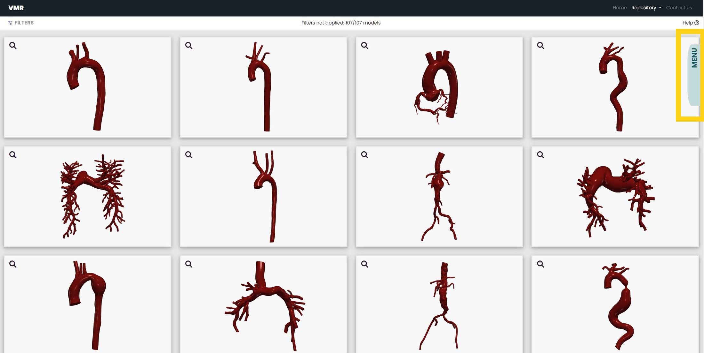 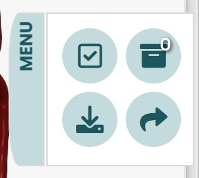After opening the menu bar, you will see four different icons, each with unique functions to help you navigate the Vascular Model Repository's dataset. The functions of each of these icons are described below.
The Select and Deselect All Icon
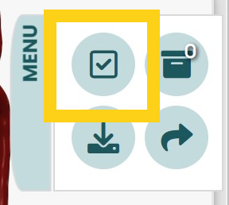By clicking and unclicking this icon, you are able to select and deselect all of the models that are showing in the gallery.
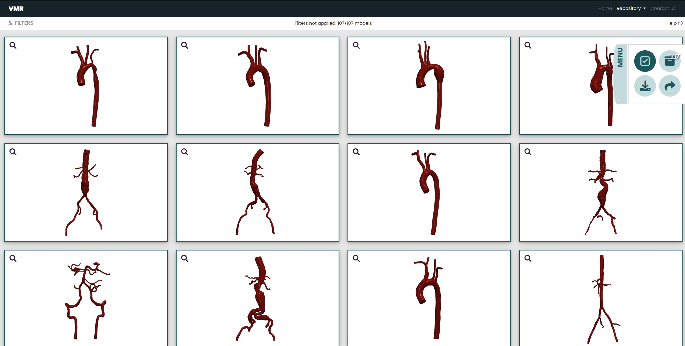In the example above, by clicking the Select All icon, all the models in the repository have been selected.
When you are viewing the models you have selected, a place you can access by clicking on the View Selected Models icon, clicking the Select All icon will deselect all the models you have selected. A confirmation message will appear. By clicking "Yes," you are able to clear the models you have selected.
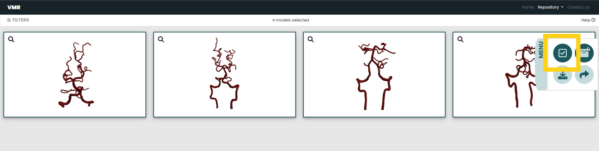 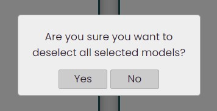In the example to the left, one is viewing vertebral models they have selected. The example on the right demonstrates the confirmation message that will appear if you click on the Select All icon when viewing the models you have selected.
The View Selected Models Icon
After selecting models, you may want to view all the models you have selected before downloading their files. To do so, find the view selected models icon, the top right icon, in the menu bar and click on it.
The number on the icon is how many models you have selected.
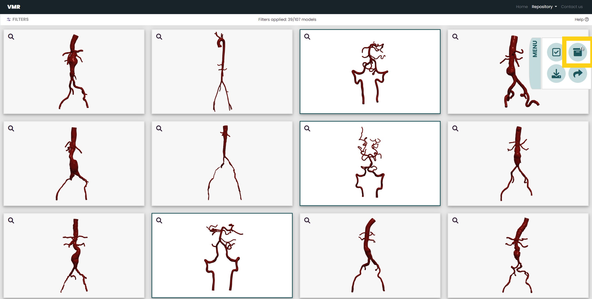 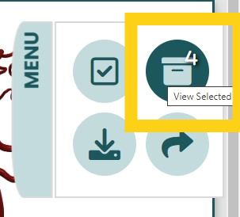Once you click on this icon, you can unclick it or apply new filters to return to the gallery.
When you are viewing the models you have selected, you can see how many you have selected on the top-middle of the screen.
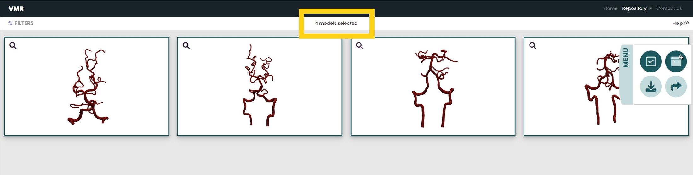In the example above, one knows that they are viewing the four models they have selected. In this page, by clicking the Select All icon, you can deselect all the models you have selected. For more information about the Select All icon, go to The Select All Icon.
The Download All Icon
Once you are ready to download the models you have selected, click on the download icon in the menu bar.
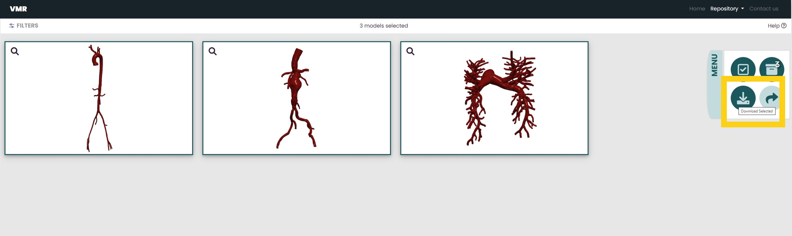 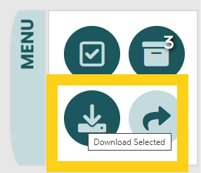When you click on the download icon, a window will appear. This message will ask for confirmation before downloading, as well as ask you to specify which file type you would like to download.
If you click on the drop down menu under "Choose file type:" you
are currently able to choose between downloading
.zip, .vtp, and .vtu files.
The .vtp and .vtu files are simulation
result files. For more information about these files, go to
Documentation.
Not all models have simulation results. If you choose to download the files from our simulation results, the box will inform you how many of the models you have selected have simulation results to download.
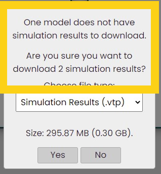In the example above, 2 out of the 3 models selected have simulation results to donwload.
The size displayed under the drop down menu changes dynamically with the file type you have chosen. It represents the total sizes of the models you have selected to download.
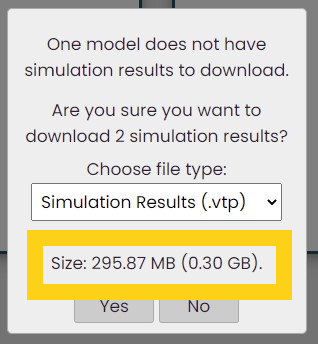Once you are ready to download the models of the file type you have selected, click "Yes" and the files will begin downloading. After downloading, the models you have selected will remain selected. To deselect these models, double click on the View Selected icon to view your selected models, then click on the Deselect All icon to deselect them. For more information about these icons, go to the view selected icon and the deselect all icon.
The Share Icon
If you have selected models and now want to share them with someone, click on the Get Shareable Link icon in the menu bar.
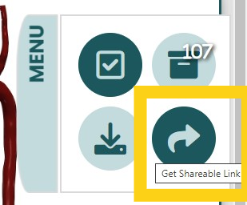By clicking this icon, you can copy the link to a page that displays the model(s) you have selected.
To learn more about this share page, go to the description on how to Share Models.